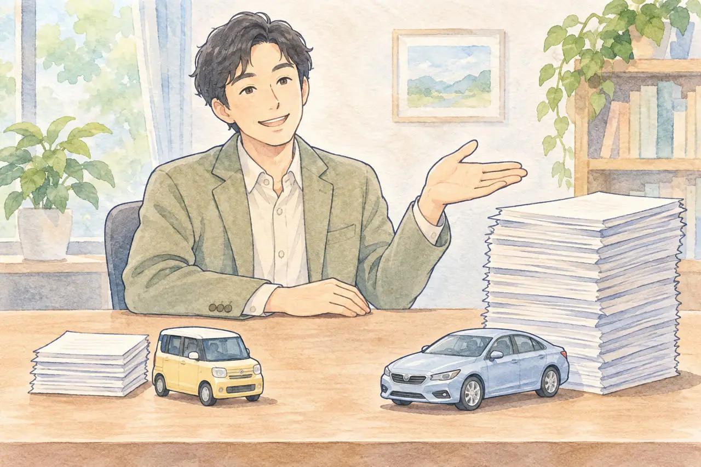

会社の車の廃車で迷っている方へ
会社の車（社用車）を廃車にするには？
法人名義の必要書類と、複数台をまとめて処分するときの流れ
公開
こんにちは、東京都足立区江北で自動車解体・廃車買取をしている「大崎商店 環七店」です。
この記事の要点
- 会社名義の車も、廃車にできます。
- 普通車は、会社名義の書類をそろえる手間がかかります。軽自動車は、手続きがシンプルです。
- リース車は注意が必要です。複数台をまとめて処分する流れもご紹介します。
「会社で使っていた車を、廃車にしたい」
「会社名義の車は、個人の車と何が違うの？」
「何台かまとめて処分したいけれど、どう進めればいい？」
会社の車（社用車・営業車など）も、廃車にできます。ただし、名義が会社（法人）の場合は、個人の車と、必要な書類や確認のしかたが少し違います。 特に普通車は、会社名義の書類をそろえる手間がかかります。
この記事では、会社の車を廃車にするときの、書類、軽自動車と普通車の違い、リース車の注意点、複数台をまとめて処分するときの流れを、公的な案内をもとにご紹介します。後半では、足立区の大崎商店の場合もご案内します。
① まず、車検証で「所有者」と「使用者」を確認しましょう

最初にやることは、車検証の「所有者」と「使用者」を確認することです。電子車検証で所有者の情報が券面から分からない場合は、「自動車検査証記録事項」や車検証閲覧アプリで確認します。
| 車検証の状態 | 考え方 |
|---|---|
| 所有者も使用者も、自社 | 自社の判断で手続きを進められます |
| 所有者がリース会社・ローン会社など、使用者が自社 | 使用者の判断だけでは処分できません。所有者の同意と、必要な書類を確認します |
| 所有者が代表者個人など、会社とは別の名義 | その所有者の意思と、必要な書類を確認します。会社の書類だけで進めず、手続き方法を依頼先へ相談します |
車を使っているのが自社でも、所有者が別の会社や人のときは、使用者の判断だけで処分できません。 手続きを始める前に、必ず確認してください。所有者が違う車の考え方は、「名義が家族・知人のままの車を廃車したい」の記事もご覧ください。
② 会社名義の普通車：必要になる書類
普通車を永久抹消登録（解体したあとの廃車手続き）する場合の必要書類は、運輸支局の案内では、次のとおりです。会社が所有者のときの主なものを、まとめます。
| 書類 | ポイント |
|---|---|
| 車検証 | 原本が必要です |
| 所有者の印鑑証明書 | 発行から3か月以内のものが必要です。会社の場合は、法務局で取得します |
| 委任状 | 代理人（解体業者など）が申請するときに必要です。実印を押します。会社の場合は、法務局に届け出ている印を使います |
| 登記事項証明書など | 車検証と印鑑証明書の会社名・住所が異なる場合に、変更のつながりを確認するために必要です。現在の証明だけでつながらない場合は、閉鎖登記簿なども確認します |
| ナンバープレート（前後2枚） | 申請時に返納します。業者へ自走で持ち込む場合は付けたままにし、取り外す時期は依頼先に確認してください |
| 移動報告番号・解体報告記録日 | 移動報告番号は使用済自動車引取証明書などで確認します。番号を解体後に新しく発行するわけではありません。解体報告の連絡を受けたあと、申請書に必要な情報を記入します |
| 申請書など | 永久抹消登録申請書（第3号様式の3）など、申請方法に応じた用紙を用意します |
永久抹消登録・解体届出そのものの申請手数料は無料です。印鑑証明書などの取得費用や、先に行う名義変更・一時抹消などの費用は別です。
会社名義であることと、事業用ナンバーであることは別です。 事業用ナンバーやレンタカーの場合は、事業用自動車等連絡書などの追加書類を確認してください。
この表は、まだ一時抹消していない車を、解体後に永久抹消する場合の説明です。一時抹消ずみなら解体届出となり、車検証やナンバーの代わりに登録識別情報等通知書などを使います。買取店へ譲渡する場合も、譲渡証明書などが別に必要になるため、依頼先の案内に沿って準備しましょう。
会社の場合、印鑑証明書の取得に加え、本店の移転や商号変更があると、登記事項証明書などで履歴を確認する手間がかかります。 登記事項証明書が、法人なら常に必要というわけではありません。印鑑証明書は発行から3か月以内が必要です。変更の証明に使う登記事項証明書も発行から3か月以内とする運輸支局の案内があるため、取得する種類・通数・期限を、取る前に依頼先へ確認してください。
本店の移転や商号変更の履歴がある場合の考え方は、「車検証と今の住所・名前が違う場合の廃車手続き」の記事もご覧ください。
印鑑証明書の通数や期限の詳しい説明は、「印鑑証明書は何通・いつまでのものが必要？」、委任状の書き方は、「委任状と譲渡証明書の書き方」をご覧ください。
③ 軽自動車は、手続きがシンプルです

軽自動車の解体返納（解体したあとの廃車手続き）は、引取業者から解体報告の連絡を受けてから申請します。軽自動車検査協会の案内に挙げられている主な書類・情報は、次のとおりです。
- 自動車検査証（車検証）の原本（コピーは不可）
- ナンバープレート（なくした場合は、車両番号標未処分理由書）
- 解体届出書（軽第4号様式の3）
- 移動報告番号（使用済自動車引取証明書に記載）
- 事業用ナンバー（黒ナンバー）の場合は、事業用自動車等連絡書
所有者以外が手続きをするときは、申請依頼書が必要です。手数料は無料です。軽自動車税の申告書など、税関係の窓口で使う書類も確認しましょう。先に一時使用中止を済ませている車は、解体届出となり、必要な書類が異なります。
案内には、印鑑証明書は挙げられていません。 普通車に比べると、会社が用意する書類は少なくなります。ただし、会社名義の軽自動車で、押印の種類などの細かい点は、事前に軽自動車検査協会か依頼先へ確認してください。
軽自動車を、ほかの人や会社へ譲るとき（名義変更）
廃車ではなく、軽自動車を買取店などへ譲渡（名義変更）する場合も、軽自動車検査協会の案内では、車検証の原本（コピーは不可）が必要です。手数料は無料です。新しく使用者になる側が、住所を確認する書類（法人は、発行から3か月以内の登記事項証明書など）を用意します。案内に、譲渡する側の実印や印鑑証明書は挙げられていません。
所有者と使用者が違う車は、所有者（販売店やローン会社など）の同意が必要とされています。リース車などは、先に所有者へ確認しましょう。
軽自動車の廃車に必要な書類は、「軽自動車の廃車に必要な書類・準備チェックリスト」の記事もご覧ください。
軽自動車の手続きの違いは、「軽自動車の一時使用中止と解体返納の違い」の記事もご覧ください。
④ 会社が車を処分するときの、お金の話
重量税の還付
自動車リサイクル法に基づいて適正に解体され、車検の残存期間が1か月以上あること、永久抹消登録や解体届出と同時に還付を申請することなどが条件です。あとから還付申請だけを行うことはできません。
還付の対象は、使用済自動車の最終所有者です。代理人による申請や、委任による代理受領もあります。会社が最終所有者なら、申請書に法人番号を記載します。受け取り方法・口座と、業者へ譲渡する際の還付金の扱いを、依頼先へ確認してください。
自動車税・重量税・自賠責保険の関係は、「廃車にするとお金は戻ってくる？」の記事をご覧ください。
社内の処理も確認しましょう
車を手放したあとの、帳簿や資産の扱い、費用の計上のしかたは、会社の経理担当や税理士へ確認してください。この記事では、会計・税務の判断はご案内していません。
⑤ リース車・ローンが残っている車の場合
リース車や、ローンの途中の車は、車検証の所有者が、リース会社やローン会社になっていることが多いです。この場合、次のことを確認してください。
- 所有者は誰か（車検証の所有者欄）
- 契約はいつまでか（残りの期間・中途解約の条件）
- 途中で手放すとき、精算や違約金が必要か（契約書で確認）
- 所有者の承諾や、書類が必要か
国民生活センターの一般消費者向けカーリースの案内では、所有者はリース会社で、原則として中途解約できず、可能な場合も解約料等が生じると説明されています。法人のリースも、契約の種類・条件によって扱いが異なるため、個別の契約内容を確認しましょう。契約の内容によっては、残りのリース料などの精算が必要になる場合があります。 契約書を確認し、リース会社へ「この車を廃車にしたい」と、先に伝えてください。
また、運輸支局の案内では、永久抹消登録を代理人が申請する場合は、所有者の実印を押した委任状が必要です。使用者だけの判断で進められる手続きではない、と考えておきましょう。
ローンが残っている車の考え方は、「ローンが残っている車は廃車できる？」の記事もご覧ください。
⑥ 複数台を、まとめて処分するとき
営業車や社用車を、何台かまとめて処分することがあります。進め方のコツは、次のとおりです。
- 車の一覧を作る：車種、ナンバー、車検の期限、置いてある場所、動くかどうか
- 車検証の所有者を、1台ずつ確認する：自社名義の車と、リース車などを分けておく
- 連絡先を1人に決める：電話や書類のやりとりを、担当者1人にまとめる
- 書類をまとめて準備する：法人の印鑑証明書や登記事項証明書は、台数が多くても、必要な通数を確認して取る
- 置いてある場所を伝える：複数の拠点に分かれている場合は、拠点ごとに
依頼先には、台数、車種、置き場所、動く車と動かない車の別を、最初に伝えると、話が早く進みます。引き取りの日程は、台数や場所によって、分かれることもあります。
⑦ 大崎商店の場合
ここからは、足立区の大崎商店の場合をご紹介します。
会社名義の車も、引き取っています
大崎商店は、会社名義の車（社用車・営業車など）も、引き取っています。 複数台でも問題ありません。会社から、複数台の廃車のご依頼をいただくこともあります。
お電話のときは、「会社名義の車です」とお伝えください。車の状態や名義に合わせて、必要な書類をご案内します。
軽自動車と普通車で、書類の手間が違います
- 軽自動車：自社が所有者の車は、印鑑証明などが不要で、簡単に対応できます。車と車検証をお持ちいただければ、譲渡できます。実印・社印・認印は、必要ありません。
- 普通車：会社名義の書類が必要になります。会社の側で書類を集めるのが、大変なところです。必要なものは、お電話で個別にご案内します。
引き取りの条件は、個人の方と同じです
引き取りや手数料の条件は、個人の方と同じです（下の「大崎商店では、」をご覧ください）。
リース車のご相談も、お受けしています
リース車のご相談も、お受けしています。ただし、所有者がリース会社などで、使用者と異なる車を、使用者が勝手に手放すと、所有者との間でトラブルになります。 車検証の所有者を確認のうえ、所有者の同意を、先に取ってきてください。 先にリース会社へ連絡してから、ご相談ください。
引き取りの日程について
大崎商店の積載車は、1台です。複数台のご依頼では、引き取りの日が分かれることがあります。 台数と置き場所を、お電話で事前にお知らせください。
ご自分の車の場合が気になったら、お気軽にご相談ください。車の状態と置き場所を伺い、ご案内します。
電話で相談する03-3854-4141よくある質問
Q. 会社の車も、廃車にしてもらえますか？
A. 大崎商店では、会社名義の車も引き取っています。お電話のときに、会社名義であることをお伝えください。
Q. 会社名義の普通車で、必要な書類は何ですか？
A. 一時抹消していない車の永久抹消登録では、車検証、所有者である法人の印鑑証明書（発行から3か月以内）、代理申請なら実印を押した委任状、ナンバープレート、移動報告番号・解体報告記録日、申請書などです。会社名や住所が車検証と異なる場合は、登記事項証明書なども必要です。一時抹消や譲渡を伴う場合は書類が変わるので、依頼先へ確認してください。
Q. 軽自動車でも、印鑑証明書は必要ですか？
A. 軽自動車検査協会の案内に、印鑑証明書は挙げられていません。ただし、所有者以外が手続きをするときは申請依頼書が必要です。細かい点は、依頼先か軽自動車検査協会で確認してください。大崎商店では、軽自動車は車と車検証をお持ちいただければ譲渡でき、実印・社印・認印は必要ありません。
Q. 何台でもまとめて頼めますか？
A. 大崎商店では、複数台でも問題ありません。台数、車種、置き場所を、事前にお知らせください。引き取りの日程は、分かれることがあります。
Q. リース車は、勝手に廃車にできますか？
A. 使用者の判断だけでは処分できません。リース車の所有者はリース会社で、廃車には所有者の承諾や所定の書類を確認する必要があります。契約書を確認して、先にリース会社へ連絡し、同意を取ってください。大崎商店でも、所有者の同意を先に取ってきていただくようお願いしています。
Q. 帳簿の処理や税金は、どうなりますか？
A. 会社の経理担当や税理士に確認してください。この記事では、会計や税務の判断はご案内していません。
会社の車のご相談も、大崎商店へ
会社の車の廃車は、書類や名義の確認が必要で、少し手間がかかります。まずはお電話で、会社名義であること、台数、車種、置き場所をお知らせください。必要な書類を、ご案内します。
大崎商店では、
- 解体費用・手続き代行費用・印紙代は、別請求しません
- 足立区内は、引き取り無料
- 足立区外で買取価格がつかない車は、環七店から車で片道約30分圏内は引き取り無料
- 買取価格がつく車は、圏外でも、所在地と車の状態によっては無料で引き取り（事前にご案内します）
- 車種や状態によっては、引き取り当日その場で現金買取も可能
- 車のお持ち込みは、どこからでも歓迎（基本は環七店。日時は、事前にお電話でご相談ください）
ご来店の前に、お電話ください。引き取りなどで外出していることもあり、お電話いただければ、受け入れの可否や、ご案内できる日時をお伝えできます。
大崎商店 環七店
電話：03-3854-4141
〒123-0872
東京都足立区江北7丁目1−3
営業時間：月〜土 10:00〜18:00
休業日：日曜・祝日
環七沿い／舎人ライナー
西新井大師西駅
大崎商店 入谷店
電話：03-3899-2837
〒121-0836
東京都足立区入谷7丁目5−11
営業時間：月〜土 9:30〜17:30
休業日：日曜・祝日・第2土曜
引き取りやご相談のお電話は、環七店がスムーズです。お電話の際は、「会社の車の廃車について」とお伝えください。車検証をお手元にご用意いただくと、ご案内がスムーズです。
※掲載のイラストはAIで作成したイメージです。実際の店舗・車両・相談風景を撮影したものではありません。
参考：北陸信越運輸局・新潟運輸支局「永久抹消登録、解体届出」／東北運輸局・青森運輸支局「永久抹消登録」／国税庁・自動車重量税の廃車還付制度／軽自動車検査協会「解体返納」／軽自動車検査協会「名義変更」／国民生活センター「カーリースのトラブル」（2025-09-17）（いずれも2026-11-07 確認）